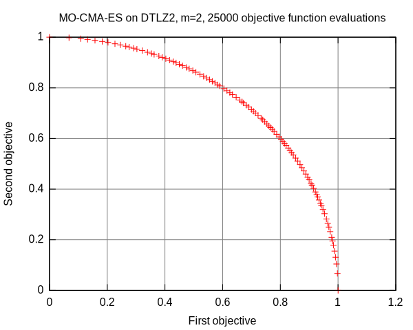

Multi-Objective Covariance Matrix Adaptation Evolution Strategy¶
The multi-objective covariance matrix adaptation evolution strategy (MO-CMA-ES) is one of the most powerful evolutionary algorithms for multi-objective real-valued optimization. In Shark, we provide a reference implementation of the algorithm (see MOCMA.h).
This tutorial illustrates applying the MO-CMA-ES to the DTLZ2 benchmark function. Please note that the methods presented here apply to all multi-objective optimizers available in the Shark library. That is, applying an optimizer to an objective function requires the following steps:
Instantiate and configure the objective function.
Instantiate the optimizer.
Configure the optimizer instance for the objective function instance.
Execute the optimizer until a termination criterion is fulfilled.
First of all, the following header files are required:
// Implementation of the MO-CMA-ES
#include <shark/Algorithms/DirectSearch/MOCMA.h>
// Access to benchmark functions
#include <shark/ObjectiveFunctions/Benchmarks/Benchmarks.h>
Next, an instance of the objective function is created and configured for a two-dimensional objective space and a three-dimensional search space, respectively:
shark::benchmarks::DTLZ2 dtlz2;
dtlz2.setNumberOfVariables( 3 );
Thereafter, the optimizer is instantiated and initialized for the objective function instance:
shark::MOCMA mocma;
// Initialize the optimizer for the objective function instance.
dtlz2.init();
mocma.init( dtlz2 );
Finally, we iterate the optimizer until the objective function instance has been evaluated 25000 times:
// Iterate the optimizer
while( dtlz2.evaluationCounter() < 25000 ) {
mocma.step( dtlz2 );
}
As in all optimizers, the MO-CMA keeps track of the best known solution found so far. In contrast to single objective optimization, the solution is not a single point but a pareto front approximated by a set of points. We can print the pareto front using the following snippet:
// Print the optimal pareto front
for( std::size_t i = 0; i < mocma.solution().size(); i++ ) {
for( std::size_t j = 0; j < dtlz2.numberOfObjectives(); j++ ) {
std::cout<< mocma.solution()[ i ].value[j]<<" ";
}
std::cout << std::endl;
}
Running the example and visualizing the resulting Pareto-front approximation with the help of gnuplot will give you the following graphics:
Please see the file MOCMASimple.cpp for the complete source code of this tutorial.


{kind=link}